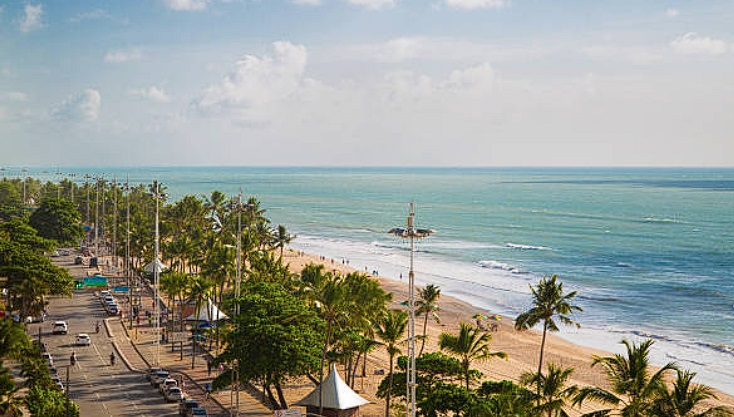

Imagine um paraíso urbano onde o mar azul se encontra com o calor vibrante da cultura pernambucana. A Praia de Boa Viagem, no Recife, é isso e muito mais. Com suas águas cristalinas e
piscinas naturais formadas por arrecifes, é um verdadeiro convite ao relaxamento e à aventura.
O que realmente diferencia Boa Viagem são suas incríveis histórias e curiosidades. Por exemplo, você sabia que esta praia já foi palco de várias batalhas históricas entre holandeses
e portugueses? Hoje, a única batalha que você verá é pela melhor posição na areia para pegar aquele bronzeado perfeito.
A orla é um espetáculo à parte, com uma vida noturna pulsante, cheia de restaurantes, bares e quiosques que servem desde pratos tradicionais até delícias gourmet. E se você gosta
de esportes, há inúmeras opções: de vôlei de praia a surfe e kitesurf.
Passear pela Avenida Boa Viagem é quase um rito de passagem para quem visita a cidade. Lá, você pode ver artistas locais exibindo suas obras, famílias fazendo piqueniques e corredores
aproveitando a brisa marinha. É um lugar onde a vida moderna e a natureza coexistem harmoniosamente.
Além disso, a praia é famosa por sua segurança, com patrulhamento constante e postos de salva-vidas, garantindo uma experiência tranquila para todos os visitantes.
Quer saber mais um segredo? Dizem que assistir ao pôr do sol na Praia de Boa Viagem é uma experiência quase transcendental, com o céu pintado em tons de laranja e rosa, refletindo nas águas tranquilas do Atlântico.
Prepare sua câmera, sua roupa de banho e seu espírito aventureiro, e venha explorar tudo o que a Praia de Boa Viagem tem a oferecer.
Localizado no vibrante bairro do Recife Antigo, o Paço do Frevo é um verdadeiro tesouro cultural que celebra a rica herança do frevo, um dos ritmos mais emblemáticos de Pernambuco. Inaugurado em 2014, este museu é um espaço
dedicado à preservação, promoção e difusão do frevo, uma manifestação artística que une música, dança e alegria de viver.
O Paço do Frevo é mais do que apenas um museu; é um centro vivo de cultura e aprendizado. Suas exposições interativas levam os visitantes a uma viagem no tempo, mostrando a evolução do frevo desde suas origens até os dias
atuais. Aqui, você pode descobrir a história dos grandes mestres do frevo, explorar partituras e registros históricos, e até mesmo participar de oficinas de dança e música.
Uma das atrações mais fascinantes é a Escola de Frevo, onde professores dedicados ensinam os passos ágeis e cheios de energia que definem essa dança única. E se você acha que só as pernas dos dançarinos trabalham, prepare-se
para ser surpreendido pelas acrobacias e malabarismos que fazem parte das coreografias.
Além disso, o Paço do Frevo conta com uma programação intensa de eventos, como shows, palestras e exibições artísticas, tornando-se um ponto de encontro essencial para quem deseja se aprofundar na cultura pernambucana.
E, claro, não podemos esquecer do visual do prédio em si. O Paço do Frevo é um exemplo deslumbrante da arquitetura histórica de Recife, com suas fachadas coloridas e detalhes arquitetônicos que são uma obra de arte à parte.
Visitar o Paço do Frevo é mergulhar na alma de Recife, é sentir o pulsar do frevo e entender por que essa expressão cultural é tão importante para o povo pernambucano. Se você está em Recife, não deixe de conhecer esse lugar
mágico onde a cultura e a história dançam juntas em perfeita harmonia.